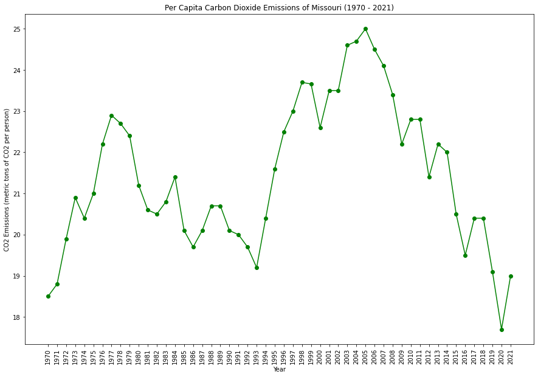
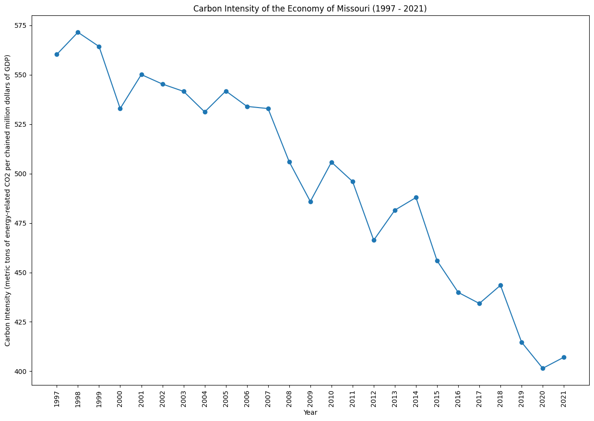
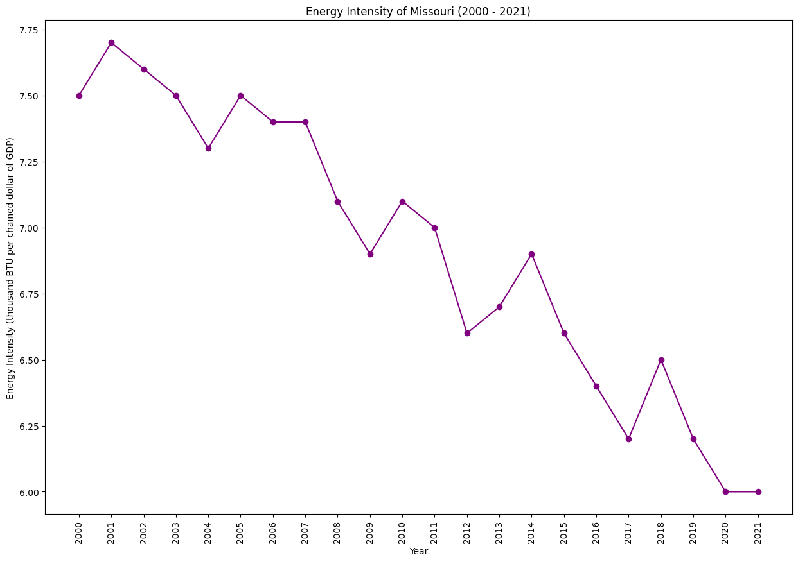

|
 |
|  |  |
Missouri has a diverse energy mix, including coal, natural gas, and renewables. The state is working on energy efficiency programs and exploring cleaner energy options. Challenges include addressing air quality concerns and finding a balance between economic interests and environmental conservation.